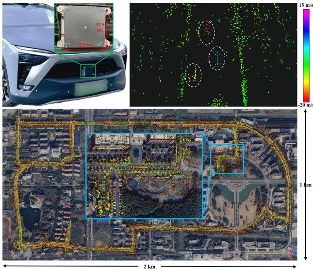
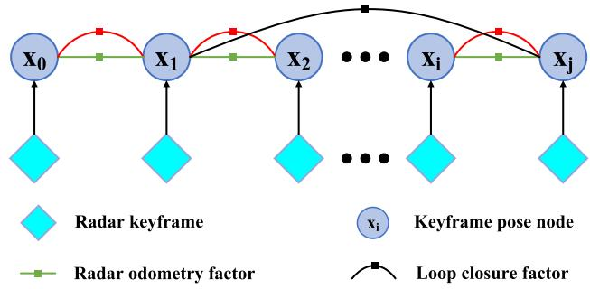

阶段 D · 激光主干 / Lesson 0094
4D 雷达 SLAM：恶劣天气下的另一条路
大雨、大雪、浓雾、烟尘里，激光会「瞎」——换一种会测速的雷达，能不能照样建图？🌧️
🎯 主题：4D 成像雷达 · 鬼影与滤波 · 自速度预积分
👥 作者：Jun Zhang、Huayang Zhuge 等（NTU）；Xingyi Li、Han Zhang 等（SJTU）
📅 2023 · 4DRadarSLAM；4D Radar-Based Pose Graph SLAM With Ego-Velocity Pre-Integration Factor
本节目标
读完你应该能：说清 4D 成像雷达给出的是哪四个量、它和激光雷达各有哪些长短；解释雷达特有的「鬼影」是怎么来的、两个系统分别怎么处理它；讲出自速度预积分（EVP）因子在做什么；最后把整个第四季的四条主线收成一张表。
和前面课程怎么接
★ 显式回链第一季 0007 课（固态雷达硬件里讲过 FMCW 能测多普勒频移）；接第一季 0006 课与 0009 课（真实环境里的失败与退化）。技术血缘上接第二季 0029 ／0030 课（IMU 预积分 —— EVP 就是从它借来的）与第三季 0058 课（VINS-Mono 的位姿图因子）。本节还是第四季的收官，会把本季主线统一收一遍。
1. 不用激光行不行？
这一整季我们都在讲激光。激光确实好：点密、角分辨率高、误差小。但它有一个绕不过去的软肋——它是一束光。
雨滴、雪花、雾、烟尘都会把这束光散射掉。4DRadarSLAM 的摘要开门见山就是这句话：
LiDAR-based SLAM may easily fail in adverse weathers (e.g., rain, snow, smoke, fog), while mmWave Radar remains unaffected. （基于激光雷达的 SLAM 在恶劣天气下很容易失效，例如雨、雪、烟、雾；而毫米波雷达不受影响。）
这句话其实把第一季 0009 课讲过的那些失败场景又点了一遍——那一课讲的 DARPA 地下挑战赛里，黑暗、烟雾、尘埃都是让激光 SLAM 直接崩掉的因素。
那么不用激光行不行？这就轮到 4D 成像雷达（4D imaging radar） 出场了。它给出的点，每个都带四个量：
距离（range）
这个点和雷达隔多远。传统雷达也有。
方位角（azimuth）
它在这个水平方向上的哪个角度。传统雷达也有。
仰角（elevation）
它在这个高度上的哪个角度——这是「4D」里多出来的那一维 。传统雷达只给一个平面（2D）或加一个多普勒（3D），有了仰角才能叫 3D 点云。
多普勒速度（Doppler velocity）
它相对雷达 沿径向的速度。这是雷达独有的礼物 ——激光给不了这个。
注意左半边那三个是「位置」，右半边那个是「运动」。一次观测同时给你位置和运动，这是雷达相对于激光最本质的优势，本节第 4 节会专门讲怎么把它用起来。
但天下没有白吃的午餐。两篇论文在引言里都花了大段篇幅说清楚代价：
点很稀。 对比一下就很直观：4D Radar-Based 那篇里用的激光雷达（Hesai Pandar128）扫一圈能出 230400 个点 ；而它的 4D 雷达（ZF FRGen21）每 60 毫秒出一帧，一帧只有 400 到 1400 个点 。噪声更大。 原文的说法是 4D 雷达的点云「比 3D 激光更嘈杂、更稀疏」。所以 4DRadarSLAM 直接说：从这样的点云里提取边缘、平面这些几何特征是很困难的 ，因此「把 3D 激光 SLAM 方法直接套过来不可行」。还有鬼影（ghost）。 雷达波会被反复反射，在根本不存在东西的位置上造出假点。这是雷达特有的麻烦，第 4 节细讲。成本更低，而且不怕天气。 这是它换来的东西——4D Radar-Based 的摘要直接说 4D 雷达是「比激光便宜得多的传感器」，并且「能在极端天气下工作」。
把这一段压缩成一句话就是：4D 雷达是用「点变少、变糙」换「不怕天气、成本更低，外加白送一个速度」。 本节剩下的部分，就是看两个系统怎么在这笔交换里把活干下来。
互动判断
4D 雷达每帧只有几百到一千多个点，而激光有二十多万个点。既然 4D 雷达的点这么少，为什么它反而「不怕雨雪」？
因为点少所以干扰也少
因为毫米波的波长更长
因为它能测多普勒速度
2. ★ 4D 雷达与激光雷达的差别
这一节是本节的两个核心之一。先把差别摆成一张表——表里的数字都来自这两篇论文的原文交代。
维度
4D 成像雷达
3D 激光雷达
点密度 约 400–1400 点／帧 （60 ms 一帧）
约 230400 点／帧 （10 Hz）
角分辨率 Oculii Eagle：方位 0.5° 、俯仰 1° ；1.5°
远高于雷达（原文未给具体数字）
测距能力 Oculii Eagle 可达 400 m ；0–100 m （精度 ≤0.02 m）
原文未给具体数字
天气鲁棒性 不受雨、雪、烟、雾影响 在这些条件下很容易失效
成本 原文称其比激光便宜得多 、更容易被接受
贵
★ 多给的那一维 每个点带一个多普勒径向速度 （FRGen21 量程 ±40 m/s，分辨率 0.1 m/s，精度 0.01 m/s）没有速度 ——只有位置
点的可信度 越远越不确定：距离不确定度 σ_r = 0.00215 r ，方位与俯仰不确定度约为 sin(0.5°)·r 与 sin(1.0°)·r
同类问题存在，但这两篇未做同样形式的建模
同一辆车、同一条街：4D 雷达与激光雷达分别看到什么
① 4D 雷达：点很少，但每个点带速度
快靠近我
正在远离
点少但便宜、不怕雨雪，还附带速度
② 激光雷达：点密得像一张照片
点密但贵、怕雨雪，而且没有速度
一个点少但便宜、不怕雨雪，还附带速度；一个点密但贵、怕雨雪
这张图在画什么： 同一辆车、同一条街（两侧有楼房、中间是路面）被两种传感器各看一遍。左格是 4D 雷达看到的结果：只有零散十几个点，而且每个点按它自己的多普勒速度上了不同颜色——红色代表正在靠近、蓝色代表正在远离；右格是激光雷达看到的结果：点密得像一张照片，把路面、楼房立面、路沿全都铺满了。怎么看这张图： ① 先比两格里的点的数量 ——左格一眼数得清，右格数不清，这就是「稀疏」与「稠密」的直观差别；② 再看左格那些点的颜色 ——颜色不是装饰，它编码的是多普勒速度，也就是每个点相对雷达是靠近还是远离；右格完全没有这个信息 ，激光点只有位置；③ 最后看两格底下那行小字，那就是这笔交换的两端。要记住的一句话： 一个点少但便宜、不怕雨雪，还附带速度；一个点密但贵、怕雨雪。 图注说明（做了哪些简化）： 为了在同一张图里并排对比，两侧都用了示意性的点分布——真实的 4D 雷达点云在不同场景下稀疏程度差别很大，激光点云则远密于此处画出的量级（原文实测为每帧 230400 点）。右格那种「点阵」画法只是表达密度，不代表真实的空间分布形态。
★ 那个多普勒速度，其实我们在 0007 课见过
回链第一季 0007 课
第一季 0007 课讲固态激光雷达硬件时，我们碰到过 FMCW （frequency-modulated continuous wave，调频连续波）这个体制，并且专门标出了它的三个硬优势——其中之一就是 它测的是信号的相干性，因此能顺便拿到多普勒频移（速度） ，而不像飞行时间法那样只能得到距离。
4D 雷达的这个多普勒速度，就是同一件事。 而且它比激光侧更「自然」——因为毫米波雷达本来就是靠 FMCW 体制工作的，测速是它的家常便饭，不是额外加装的功能。
换句话说：在激光那边，「能测速」是一个需要特意上 FMCW 才能拿到的新能力；在雷达这边，它是本来就在那里的东西。 本节第 4 节的 EVP 因子，做的就是把这件「本来就在那里」的东西榨干。

原图注（Fig. 1）： Top: 4D radar mounted in the front bumper of our vehicle (left) and 4D radar point cloud colored based on the Doppler velocity (right). The color of moving vehicles (in dashed circles) is distinguished from other static points. Bottom: Mapping result of our framework aligned with Google Earth satellite map. The end location is zoomed in and highlighted in a blue box.按多普勒速度着色 的 4D 雷达点云（右）。运动车辆（虚线圆圈内）的颜色与其他静止点明显区分。下排：本框架的建图结果与 Google Earth 卫星底图对齐；终点位置被放大并用蓝框标出。）怎么看这张图： ① 先看上排右边 那张点云——它就是把自绘封面图里那个「彩色稀疏点」换成真东西：颜色编码的是每个点的多普勒速度；② 注意那两个虚线圆圈 ——圈里的点是正在运动 的车辆，它们的颜色和周围静止点不一样，这正是「多普勒速度可以用来分辨动静」的直接证据；③ 再看下排 ，把估计出的轨迹叠到卫星图上——建图结果与卫星底图对得上，说明这套纯雷达的方案在校园尺度上确实走得通。要记住的一句话： 这张图一句话说完就是——雷达点云里的颜色不是装饰，是速度；而速度能告诉你「谁在动」。 图注说明： 原文这张图上排左图展示的是雷达的安装位置（前保险杠），它决定了点云的坐标系原点在哪里，也解释了为什么前文说「径向最不确定」——因为径向就是从保险杠往前那条射线方向。
最后补一个工程细节，它是 4DRadarSLAM 前端算法的地基：雷达点的置信度是随距离变化的。 原文直接引了雷达手册给出的关系：
其中 $r$ 是测量距离、$\sigma_r$ 是距离不确定度，$\sigma_a$ 与 $\sigma_e$ 分别是方位与俯仰方向的不确定度。原文把这个分布画了出来：它像一个椭球，有一个半轴指向原点 ——也就是说，同一个点，在「远近」这个方向上最不确定，在「角度」方向上相对确定，而离得越远，整个椭球越大。
这个模型看上去只是个小细节，但它直接决定了 4DRadarSLAM 前端配准算法怎么设计（下一节就会看到）。
原图注（Fig. 3）： The probability distribution of a point.怎么看这张图： ① 先找到图上那个椭球 ——它代表「这个点真实位置可能落在哪儿」，球面以内是它的不确定范围；② 注意椭球不是正球 ，它被拉长了，而且有一条半轴指向传感器（原点）方向 ——这就是那三个公式的几何含义：径向（远近）最不准，角度方向相对准；③ 把这张图和前面三个公式对起来读：$\sigma_r$、$\sigma_a$、$\sigma_e$ 都是半径 $r$ 的线性函数 ，所以同一个点放得越远，整个椭球越大——图中若画出多个不同距离的点，它们的椭球应当是随距离成比例放大的。要记住的一句话： 雷达给出的每一个点都自带一个「我有多不确定」的标签 ，而且这个标签跟距离挂钩——这正是下一节 APDGICP 要往 GICP 的协方差里塞进去的那一项。图注说明： 原文把它作为 Fig. 3 单独列出，说明作者认为这个「不确定性随距离增长」的模型是后面一切配准设计的前提，而不是随手一提的细节。
3. 4DRadarSLAM：一套完整的雷达 SLAM
第一篇是「系统派」——它的目标是证明「不用激光、用 4D 雷达也能大规模建图」 ，所以它把整套 SLAM 拆成三块，每块都按雷达的特点重新设计过。
前端 ：预处理（用多普勒滤动态物）→ scan-to-scan 匹配（APDGICP）→ 选关键帧回环检测 ：四级规则预筛 → 强度 Scan Context → 里程计检查后端 ：g2o 位姿图（里程计约束 + 回环约束 + GPS）
原图注（Fig. 2）： Overview of the proposed 4DRadarSLAM system. It consists of three modules: (a) Front-end: to calculate the odometry. (b) Loop Detection: to detect the loop closure. (c) Back-end: pose graph construction and optimization.怎么看这张图： ① 先在图上找出这三块，并注意它们的串行关系 ——前端给出里程计与关键帧，回环模块拿关键帧去数据库里查，后端再把两者连同 GPS 一起塞进位姿图；② 注意回环那一段里其实有三道关卡 （预筛、强度 Scan Context、里程计检查），而不是一个模块——这是下一段要讲的重点；③ 留意后端那一块有两条来自外部的输入：一条是从前端来的里程计约束，另一条是 GPS（如果可用）。要记住的一句话： 这是一套「对位姿图很熟悉的人，为 4D 雷达重新配了一遍零件」的系统——框架是老的，零件是新的。
前端：为什么不提特征，以及 APDGICP 做了什么
原文在这里做了一个很关键的路线选择。它先承认事实：4D 雷达点云太吵闹，提不出可靠的边缘和平面。 于是它放弃特征法，直接在原始点云上做配准 ，用的基础是 GICP （第二季 0023 课讲 PCL 时见过这个家族）。
但 GICP 还不够，因为雷达点的可信度是随距离变化的 （上一节那个椭球）。于是它提出了 APDGICP （Adaptive Probability Distribution-GICP）：在 GICP 的协方差里额外加一项与点自身测量不确定度有关的项。 原文的原话是：
The rationale behind this is that points closer to the radar have lower uncertainty and should be given higher weight, vice versa. （其背后的道理是：离雷达更近的点不确定度更低，应该被赋予更高的权重，反之亦然。）
不过这里有一个很诚实、也很值得记住的实验结果：APDGICP 在小场景里比 GICP 好，在大场景里反而更差。 原文解释得很直白——大场景里更多的点分布在更远处，这些点拿到的权重更低，于是「能提供有效配准的点」也就更少，点数相比 GICP 减少了 2 到 3 倍 。
前端还有一个小但要紧的设计：用多普勒速度来滤掉动态物体。 它的做法是先估计出雷达自身的速度，然后用「估计出的多普勒」和「自速度」一起判断每个物体真正在怎么动——静止的留下来，动的剔掉。这一点为后面的回环帮了大忙，因为回环最怕的就是场景里一半的点是别的车。
关键帧的选取标准是两条阈值：平移超过 $\delta_t$（实验里取 0.5 m 或 2 m），或旋转超过 $\delta_r = 15^\circ$。
回环：为什么用「强度」Scan Context
这是本篇最值得学的一个工程判断。
Scan Context 的思路我们在上一节 0093 已经见过——把点云切成一圈圈的环、再切成扇区，用每个格子里的某个统计量编码成一张「指纹图」，然后比指纹。而最常用的统计量是每个格子里的最大高度 。
但这篇论文说：对雷达不能用高度。 原文的理由是——
radar height information is noisy due to sensor limitations and multiple reflection echoes. Using maximum height as context would be inaccurate. Instead, we used the maximum intensity/power of reflected signal to construct the scan context matrix, as it is more stable and valuable for radar. （由于传感器限制与多次反射回波，雷达的高度信息是有噪声的，用最大高度做上下文会不准。作为替代，我们用反射信号的最大强度／功率来构造 scan context 矩阵，因为它对雷达而言更稳定、也更有价值。）
于是它换成了「最大反射强度」。 这个判断很朴素——高度是雷达不太擅长测的量，而回波强度是它天生就在测的量。
还有一个必须做的适配：Scan Context 原本是为 360° 方位视场的激光设计的，而 4D 雷达在这里只有 110° 的视场。 所以它把点云切成 40 个环 × 20 个扇区 （单位环间距 2 m，单位扇区角 5.5°）。
在进 Scan Context 之前，还有四级规则预筛 （原文叫 loop pre-filtering），目的就一个：别把整个数据库都搜一遍。四条规则是：
① 距离限制
新回环的查询帧不能离上一个回环的查询帧太近；而且一个回环的两帧之间也不能太近。
② 空间半径
回环的两帧必须落在一定半径内。这个半径是自适应 的——与两帧之间走过的距离成正比；而一旦找到一个回环，如果候选离得很近，半径就会相应缩小。
③ 高度差
两帧的高度差阈值设为 2 m ，高度来自气压计。
④ 偏航角
两帧的偏航角要相似，阈值取 20° 。原文说这个值是实验下来「对避免我们这套雷达的假阳性匹配」比较合适的。
最后一道关卡是里程计检查 （这一步借自 LAMP）。它的想法很聪明：回环给出的相对位姿，和里程计累积出来的相对位姿，应该是差不多一致的。 原文比较这两个变换，如果平均累积位姿误差超过平移阈值 $\epsilon_t = 0.15$ m 或旋转阈值 $\epsilon_r = 0.05$ rad（约 2.9°），就判定为外点回环，直接拒绝。
这一步对上了上一节 0093 与第一季 0014 的那条铁律——宁可不加，也不能加错。 原文自己说得很重：Scan context alone may introduce geometric inconsistency, which would be a disaster to back-end pose graph optimization. （只用 Scan Context 可能引入几何不一致，这对后端的位姿图优化将是一场灾难。）
后端与实验数字
后端是最「传统」的一块：关键帧是节点，里程计约束是二元边，回环是二元边，GPS 是一元边（如果可用） ，全部交给 g2o 求解。这一套与第二季 0020 、0021 课讲的完全一致。
实验规模值得一提：它在 两个平台 （手推车，约 1 m/s；汽车，25–30 km/h）上采了 5 个数据集 ，全部在新加坡南洋理工大学的校园里，长度从 246 米到 4.79 公里。几个关键结果：
配置
loop 1（4.79 km）
loop 2（4.23 km）
说明
只开前端（apdgicp）
ATE 227.54 m
ATE 59.12 m
漂移极大
前端 + 回环（apdgicp-lc）
ATE 84.88 m
ATE 43.67 m
回环有效，但还不够
前端 + 回环 + GPS ATE 5.28 m ATE 2.94 m GPS 提升了一个数量级
原文自己也把这条结论点得很明：回环确实显著改善精度，但 GPS 带来的提升幅度更大。 不过要公平地看——只有 loop 1 与 loop 2 这两个数据集有 GPS 数据，前三个小场景是没有的。
耗时方面：前端只要 4 ms ；回环检测在小场景里要 131 / 121 / 142 ms，在大场景里只要 29 / 44 ms——原因是它的自适应半径在「回环更多」的大场景里会缩小，候选变少，自然更快；其中 80% 以上的时间花在 scan context 那一步 。后端不超过 2.2 s。
原文承认的边界： 点太稀，导致回环不得不依赖强度信息；实验以自采数据集为主（5 个数据集全部在同一个校园里），泛化性没有被充分验证。另外原文的符号 $\mathrm{SE}(\mathcal{S})$、$\mathrm{SE}(\mathcal{B})$ 是 OCR 误读，按上下文应为 $\mathrm{SE}(3)$；表格里的 Sengs 、Loeceton Dton 也分别是 Segments 与 Loop Detection 的排版错误。
4. 自速度预积分因子：把那「白送的速度」用起来
第二篇是「方法派」。它的名字叫 4DRaSLAM ，核心创新只有一个，但很精准：把雷达的多普勒速度，做成因子图里的一条约束。
先说清楚它和上一篇的定位差别。原文有一句话定了调：To the best of our knowledge, this is the first research on 4D radar-only SLAM. （据我们所知，这是第一项针对「仅 4D 雷达」的 SLAM 研究。）——注意「only」这个词，它不用 GPS、也不用 IMU。 这正是它必须把多普勒榨干的原因：没有别的传感器帮你兜底，你就得把手上这个传感器多的那一维用到极致。
第一步：先对付鬼影
原文把 4D 雷达的噪声分成两类，而且处理方式完全不同：
鬼影（ghost detections）
原文的定义是：由多径射线造成的、位于地面以下的虚假点。 它的处理办法是一条完整的几何流水线：先用距离阈值 $\delta_r$ 和「高度落在雷达安装高度 $H$ 附近 $\pm\delta_h$ 内」两个条件挑出「可能是地面的点」；再用 PCA 算出这些点的法向量，只保留法向量接近竖直的；最后用 RANSAC 从这些点里拟合出地平面，把落在地面以下的鬼影点全部去掉。
随机点（random points）
原文的定义是：不稳定、闪烁的、随机出现的虚假目标。 它靠帧间一致性 来识别：先用上一帧估出来的速度把上一帧点云变换到当前帧，建一棵 k-d 树 做固定半径的最近邻搜索；如果当前帧某个点在半径 $\delta_p$ 内找不到任何邻居 ，就判它是随机点并删掉。
这个思路很朴素——真实的物体应该连续地被看到，一闪而过的多半不是真的。
鬼影：幕墙把雷达波来回弹，就在不存在的位置造出点来
真实的点（实心）
鬼影（空心，位置是假的）
玻璃幕墙大楼
一去
一返
雷达车
多径反射会造出「不存在的目标」，这是雷达特有的麻烦
这张图在画什么： 一栋外立面是玻璃幕墙的大楼旁边，一辆装着 4D 雷达的车正在经过。大楼右侧（实心红点）是雷达真正看到的东西——幕墙上真实的反射点；而在大楼左侧、幕墙后面 那几个空心紫圈，是雷达波被幕墙来回弹了几次之后，在根本不存在东西的位置上造出来的假点。怎么看这张图： ① 先看那条橙色虚线和紫色虚线 ——它画的是雷达波「一去一返」的路径：先打到幕墙上，被反射回去，再反射回来，走了一段额外的路；② 因为雷达是靠「回波花了多久回来」算距离的，多走的这一截路会被算进距离里 ，于是点就被放到了比真实位置更远的地方——也就是幕墙后面；③ 注意那几个假点都被虚线圆圈 圈出来了，这是提醒你「它不在真实位置」；④ 再看右边那个车——它才是雷达所在的位置，请顺着橙色箭头确认波的走向。要记住的一句话： 雷达的多径效应会产生不存在的目标 ——这是它特有的麻烦，激光不会有。图注说明（做了哪些简化）： 真实的鬼影不一定恰好出现在「幕墙正后方」，具体位置取决于反射路径的几何；本图把典型情形画成了一幅易于理解的示意，并省略了其他物体造成的多次散射。
第二步：从多普勒反推出自己的速度
滤掉鬼影和随机点之后，剩下的点大多是稳定目标。这时多普勒速度就派上用场了。原文的关系式非常简洁：
逐项读：$v_{r,i}$ 是第 $i$ 个点测到的多普勒径向速度；$\mathbf{d}_i$ 是从雷达指向这个点的单位方向向量；$\mathbf{v}_s$ 是雷达自己的速度。这个式子的意思是：一个静止的点，它相对雷达的速度就是「雷达速度在它这个方向上的投影，再取反」。
原文还考虑了雷达不是装在车正中心的（有安装位置 $\mathbf{t}_s$ 和安装姿态 $\mathbf{R}_s$），所以车上一点的速度会是「线速度 + 角速度 × 力臂」，于是：
把这两个式子组合起来，一帧里所有的静止点就构成了一组线性方程 ——每一个点都给出一行。于是：用 RANSAC 把动态物体的外点剔掉，只留静止内点，再做一个简单的最小二乘，就能同时解出车的线速度和角速度。
原文对这一步的观察很实在，值得抄下来：in practice, most points in the 4D radar point cloud are static in the world frame （实际上，4D 雷达点云里绝大多数点在世界坐标系下是静止的）。也就是说，这个「拿一堆静止点反推自己怎么动」的思路，在室外场景里天然成立。
★ 第三步：自速度预积分因子（EVP）
现在到了本篇的核心。先把动机说清楚，原文讲得很直白：
为什么光靠配准不够
Since the 4D radar point clouds are too sparse to reliably estimate poses by matching only two consecutive frames… （由于 4D 雷达点云过于稀疏，只靠匹配相邻两帧无法可靠地估计位姿……）
原文还进一步解释说：仅凭稀疏的 4D 雷达点云得到的配准结果是不稳定的、精度有限 ；而自速度预积分为位姿图优化提供了一个额外且稳定的约束 。
换句话说：配准是「拿两帧互相拼」，它对点云质量很敏感；而自速度是「直接测量车的运动」，它和点云的稠密程度关系不大。 两者正好互补。
那么 EVP 是怎么做的？原文明确说了灵感来源：它是从 IMU 预积分借来的 （原文引的就是 Forster 等人的那篇预积分工作，也就是我们在第二季 0029 ／0030 课里逐步推过的那一套）。
回忆一下 IMU 预积分的核心动作：把两个关键帧之间的所有高频 IMU 测量累加起来，得到一个「从关键帧 $i$ 到关键帧 $j$ 的相对运动」，把它当成这两个节点之间的一条约束。 EVP 做的事情一模一样，只是把「IMU 测量」换成了「雷达测出来的自速度」：
翻译成大白话：从上一步拿到的「每一帧的自速度」，一帧一帧地把旋转和位置推下去。 而 $(\Delta\mathbf{R}_{ij},\ \Delta\mathbf{p}_{ij})$ 就是从 $i$ 到 $j$ 的预积分相对运动 ——第 3 节说过，它会被当成因子图里节点 $i$ 与 $j$ 之间的一条额外约束。它的误差项是：
这个残差和我们第二季 0029 课推过的 IMU 预积分残差长得几乎一样：上面一行管旋转、下面一行管平移，各自比较「优化变量算出来的相对运动」和「预积分预测的相对运动」差多少。 唯一的不同，是这里的预积分量来自雷达多普勒，而不是来自陀螺仪和加速度计。
顺便说一句，第三季 0058 课（VINS-Mono）里那个「四自由度位姿图」用的也是同一套语言——把高频的、独立的运动观测压成关键帧之间的一条边。 这条思路在雷达上的落地方式，和它在视觉惯性上的落地方式是完全同构的。
因子图上有哪几条边

原图注（Fig. 4）： Structure of our proposed pose graph. Once a radar keyframe is selected, a graph node associated with this keyframe is added to the graph. There are three factors in the pose graph: radar odometry factor, ego-velocity pre-integration factor, and loop closure factor.怎么看这张图： ① 先数一数一个节点上挂了几条边 ——这是读因子图图片的标准动作；② 然后分清三类边的来源：雷达里程计因子（RO） 来自 scan-to-submap 的 NDT 配准，是「拿点云互相拼」得到的；自速度预积分因子（EVP） 来自多普勒测速的积分，是「直接测车的运动」得到的；回环因子（LC） 来自 Scan Context 检测到的回环；③ 注意 RO 与 EVP 这两条边约束的是同一对节点，但依据完全不同 ——它们一个信点云、一个信多普勒，正好互补，这就是原文说的「额外且稳定的约束」。要记住的一句话： 这三条边对应三种彼此独立的证据来源——几何（配准）、运动（多普勒）、外观（回环） ，把它们放进同一张图里一起优化，就是这套系统的全部想法。
再补两个实现细节：
scan-to-submap 的 NDT 配准。 因为单帧雷达点太稀，它用滑动窗口 把最近若干个关键帧拼成一个更密的「雷达子图」，再把当前帧配到子图上。原文说这样能更清楚地表达局部环境特征，并提升配准精度与鲁棒性。而 NDT 建模每个网格内的正态分布时，也把「每个点的测量概率密度」算了进去 ——这和 4DRadarSLAM 的 APDGICP 是同一个思路，都在利用「雷达点的可信度随距离变化」这件事。回环用的是 Scan Context，但用最大强度编码。 理由与上一篇完全一样：稀疏雷达数据用最大高度不可靠，而高强度点往往是稳定目标。
实验数字与消融
它的数据集是自采的：车辆装了 ZF FRGen21 4D 雷达、Hesai Pandar128 激光雷达与 NovAtel GNSS 组合导航系统，在工业园区与上海交大校园里跑了 20 公里以上。有 GNSS 真值的序列是 6 条（Industrial zone 1–3 与 Campus 1–3）。
方法
Campus 3
Kung 等人的汽车雷达里程计
7.58 / 0.0388 / 82.08
激光 SLAM（SC-LeGO-LOAM）
2.68 / 0.0173 / 3.33
本文的 4DRaSLAM 3.06 / 0.0245 / 3.83
这张表信息量很大：它的 ATE 是 3.83 米，而同一场景的激光 SLAM 是 3.33 米——非常接近。 原文对此的评价是：尽管雷达点云稀疏得多、嘈杂得多，它在相对误差与绝对轨迹误差上仍与激光 SLAM 可比 。原文还特别指出，Campus 2 与 Campus 3 这两段行驶距离更长、点云更不稳定，其他雷达方法在这里精度急剧下降，而它的表现依然接近激光。
消融实验是另一处值得看的地方（Industrial zone 2 / Campus 1 / Campus 3，格式为平移误差 % / 旋转误差 deg/m）：
配置
Industrial zone 2
Campus 1
Campus 3
去掉雷达滤波
1.93 / 0.0106
2.80 / 0.0255
3.28 / 0.0258
去掉 EVP 因子
2.21 / 0.0137
3.13 / 0.0304
3.92 / 0.0275
完整方法 1.58 / 0.0094 2.32 / 0.0216 3.06 / 0.0245
把这三行横着比一下就能看出主次：去掉滤波后误差略有上升，而去掉 EVP 因子后误差上升得更明显 。 原文的结论也正是这个顺序——滤波「略微提升精度」（mainly affecting the scan registration sub-module），而 EVP 因子「显著提升系统性能」，因为它提供了那条配准给不出的稳定约束。
原文承认的边界： 它只用了单个 4D 雷达、没有 IMU ，鲁棒性还有待验证；而且整个方法依赖多普勒速度的质量 。这一点其实和它的优点是一枚硬币的两面——只用多普勒是它的立身之本，也正好是它最脆弱的地方。
5. 两篇横向对比
组课的老规矩：先摆一张对比表当主干，原文没说的填「未提及」。
论文
输入传感器
描述子类型
是否需训练
是否旋转不变
检索方式
评估数据集
原文承认的短板
4DRadarSLAM 4D 成像雷达
强度 Scan Context否
是
四级规则预筛 + Scan Context + 里程计检查
自采 5 个数据集
点位稀疏导致回环依赖强度；以自采数据集为主
4D Radar-Based 4D 雷达无 IMU、无 GPS ）
EVP 因子
否
—
因子图联合优化
自采数据集
仅单 4D 雷达、无 IMU ，鲁棒性待验证；依赖多普勒质量
再补一张「它们各自怎么解决同一个问题」的对照，这张表更能看出两篇的分工：
问题
4DRadarSLAM
4D Radar-Based
前端配准 APDGICP（在 GICP 上加点的测量概率分布）
scan-to-submap 的 NDT（建模时计入点的测量概率密度）
怎么处理鬼影 原文未单列鬼影处理；用多普勒识别并滤除动态物体
PCA 找法向 + RANSAC 拟合地平面 ，去掉地面以下的鬼影；再靠帧间一致性去掉随机点
怎么用多普勒 只用于判断物体是否在动 （从而滤掉动态物体）
反推自速度，并预积分成因子图里的一条约束（EVP）
怎么闭环 强度 Scan Context + 里程计检查；另有 GPS 一元边
强度 Scan Context，进因子图做回环因子
关键帧标准 平移超 0.5 m 或 2 m，或旋转超 15°
平移超 1 m 或旋转超 5°
最亮眼的数字 loop 1 的 ATE 从 84.88 m 降到 5.28 m （加了 GPS）
Campus 3 上 ATE 3.83 m ，接近同场景激光 SLAM 的 3.33 m
我们的判断（注意：以下是我们的评价，不是原文的自评）
哪一篇更值得读，取决于你想学什么
4DRadarSLAM 的价值在于「系统完整性」。 它把前端、回环、后端全都按雷达特点重新配了一遍，而且每一步都交代了为什么这么做。特别是 「为什么用强度而不是高度来编码 Scan Context」 这个判断，是一句能直接迁移到别的传感器上的工程智慧——用你最擅长测的量，而不是别人习惯用的量。 它的短板也很清楚：实验全在一个校园里，泛化性没有被检验。
4D Radar-Based 的价值在于「一个动作做到位」。 它的核心就是 EVP 因子，而这个想法的漂亮之处在于：它把「雷达多出来的那一维」从一个辅助信息（上一篇只拿它滤动态物）升级成了一条独立的约束。 消融实验支持这个判断——去掉 EVP 带来的损失，明显大于去掉滤波带来的损失。
我们还想指出一点：EVP 这个想法本身并不新 ——原文也很坦率地说了它是受 IMU 预积分启发。真正的工作量在于「把多普勒估出的自速度整理成一个可用的预积分量」，以及证明它在稀疏点云场景下确实比配准更稳。这属于把成熟工具搬到一个新传感器上并做扎实 的那一类工作，而不是发明新数学。
最后一句给两篇的共同定位：它们证明的不是「雷达能替代激光」，而是「雷达能在激光失效的条件下，把活干到一个可接受的水准」。 这个区别很重要——它决定了你该在什么场景下选它。
互动判断
两篇论文的回环检测都用了 Scan Context，但都把「最大高度」换成了「最大反射强度」 。这个改动最本质的理由是什么？
因为强度描述子算得更快
因为雷达的高度噪声大、强度更稳
因为强度更省存储空间
6. ★ 第四季收官：四条主线与一张总表
第四季（阶段 D · 激光主干）到这里就结束了。这一季一共读了二十多篇论文，从 LOAM 一路走到 4D 雷达。回头看，它们其实是在四条主线上反复推进。
主线一：提特征 → 不提特征
这条线从 0074 （LOAM）开始。LOAM 的整套设计都建立在「先提角点和平面点，再拿特征去配准」上。而到了 0084 （FAST-LIO2），它彻底不提取特征了——直接把原始点拿去和地图配准。
这正好是第一季 0006 课提出、第三季 0046 –0050 课在视觉侧讲过的那个问题的激光侧版本 ：「提取 vs 不提取特征」的第二回合。 视觉侧的答案是直接法（DTAM / LSD-SLAM / DSO）不提取特征、直接比像素；激光侧的答案是直接用原始点配准。
而最妙的是，这条线最后在回环上又折了回来 ：本节第 1 课（0092）里 BoW3D 依赖 LinK3D 的关键点，第 2 课（0093）里 RING++ 也要先从点云里提六个局部特征。「提特征」在里程计侧被淘汰了，但在地点识别侧依然是主流。 这不是矛盾——里程计要的是精度，识别要的是紧凑和可检索，两者对「特征」的需求根本不同。
主线二：数据结构 —— 那笔债还完了
这是整个四季里最长的一条伏笔。
ikd-Tree 那笔债的完整闭环
第一季 0006 课 （LiDAR 里程计综述）第一次提到了 ikd-Tree，把它挂成了一个悬念——「ikd-Tree 与 k-d 树到底差在哪」。
第二季 0022 课 （点云 BA / BALM）明确说：本文走的是自适应体素化，ikd-Tree 留到阶段 D 。
第四季 0074 课 （LOAM）把问题的严重性算清楚了：LOAM 建图那一步每个扫描周期都要对地图重建一次 k-d 树，耗时 58–131 ms，而地图越大这个代价越大——这是一个靠换配准算法解决不了的天花板。
第四季 0084 课 （FAST-LIO2）正面回答：ikd-Tree 用增量式更新取代了「每次重建」 ，只动被改动的那部分，于是建树的开销不再随地图规模线性增长。到这里，这笔挂了四季的债正式还清。
紧接着 0085 课 （Faster-LIO）又往前走了一步：干脆连树都不用——iVox 用稀疏体素哈希替代了树结构 ，避开了树结构的指针追逐。从「静态 k-d 树 → ikd-Tree → iVox」，这是本季最完整的一条技术演进线。
主线三：退化与鲁棒
激光在长走廊、隧道、开阔地这些地方会「退化」——几何信息从某个方向上整个消失，配准就会在那一个自由度上漂。
本季在几个不同方向上都在对付它：0076 课讲了 NDT 与 EKF 这两条变体路线（NDT 的「网格内概率分布」本身就比逐点匹配更抗噪）；0082 课（SuMa）用面片地图把「用哪个几何基元描述世界」换了一种方式；0086 课（Point-LIO）与 0087 课（iG-LIO / LOG-LIO）继续在配准建模上加细节；而本季的最后一段（0091 课）讲的是另一种思路——不追求一种方法打天下，而是准备多套方案、根据情况可切换地组合 。
回头再看本节这两篇，会发现「鲁棒」这个词在雷达上又换了一层含义：激光要担心的是几何退化，雷达要担心的是点少、点糙、还有鬼影。 传感器换了，工程的着力点就跟着换。
主线四：地图与回环
本季前半段几乎所有篇幅都在讲「里程计」，直到最后这个模块才回到「地图」与「回环」：0082 课把地图从点云换成了面片（surfel） ——这是地图表示本身的一次升级；然后 0092 、0093 两课讲了激光回环的三条路线（几何 CSM / 3D 词袋 / 谱方法），最后 0094 （本节）把话题推到「连激光都不用」。
这条线也正好回收了第一季 0014 课留下的那条铁律——本模块三节课里，假阳性这件事被反复以不同形式提起（Cartographer 的 Huber 损失、BoW3D 的 $R_{P100}$、4DRadarSLAM 的里程计检查）。可见无论传感器怎么换，这条规律都成立。
一张总表：本季读到的系统放在一起看
下表把本季的主要系统在四个维度上排开。说明：本表依据本季各课页面里的表述整理，只填能确证的项；标「—」表示该课页面未交代，不代表原文没有说。
系统（课号）
提特征？
用 IMU？
地图 / 索引结构
带回环？
LOAM（0074）
提（角点 + 平面点）
可选（不加时精度下降）
特征点云 + 按 10 m 立方体切块的 k-d 树
否 （原文列为未来工作）
LeGO-LOAM（0075）
提（先做地面分割）
是
特征点云
是
LIO-SAM（0078）
提（角点 / 平面）
是（紧耦合）
特征点云 + 局部地图
是（四类因子的因子图）
BALM（0079）
提（边缘 / 平面）
—
自适应体素化
—
MULLS（0080）
提（多种度量一起算）
—
多度量特征
—
DLO（0081）
不提 （直接法）否
体素化的子地图
—
SuMa（0082）
不提 （面片）—
面片（surfel）地图 —
FAST-LIO（0083）
提（平面 / 边缘）
是（迭代 EKF）
ikd-Tree
—
FAST-LIO2（0084） 不提 （原始点直接配准）是
ikd-Tree（增量式更新） 否 （回环交给外部模块）
Faster-LIO（0085）
不提 是
iVox（稀疏体素哈希） —
Point-LIO（0086）
不提 （逐点处理）是
—
—
KISS-ICP（0088）
不提 否
—
否
Cartographer（0092 ）
不提 （概率栅格几何匹配）否
概率栅格子图 + 预计算栅格
是 （本课主角）
BoW3D + LinK3D（0092 ）
提（线性关键点）
否
哈希表（词 → 地点集合）
是 （本课主角）
RING++（0093 ）
提（六个局部特征）
否
稀疏扫描地图（RING / TING / BEV）
是 （本课主角）
4DRadarSLAM（0094 ）
不提 （直接配准原始点云）否（用气压计 + GPS）
强度 Scan Context 指纹
是 （+ 里程计检查）
4D Radar-Based（0094 ）
不提 （NDT 配准）否 （仅单雷达）位姿图（RO + EVP + LC 三因子）
是
把这张表竖着扫一眼，会有两个很明显的趋势：
趋势一：越往后，「提特征」这一列的「不提」越多。 从 LOAM 的提两类特征，到 DLO / SuMa / FAST-LIO2 / KISS-ICP 的不提，这条线是整季最清晰的一条。但最后三行（回环模块）又全部回到了「提」 ——这恰好印证了前面说的：识别需要的是紧凑与可检索，里程计需要的是精度，两者的需求方向不同。
趋势二：「用 IMU」这一列并不是单调的。 中间一长串紧耦合系统都上了 IMU，但到了 KISS-ICP 和本节的 4D Radar-Based ，又有两篇刻意不用——一个是为了极简，一个是为了证明单雷达也能成事。这说明「加传感器」不是唯一的进步方向，「把手上已有的传感器用到极致」也是一条路。
课后练习
请解释 4D 雷达的「鬼影（ghost）」是怎么产生的，并说明本模块两篇论文分别是怎么处理它的。
展开查看答案
产生原因：多径效应。 4D Radar-Based 的原文把鬼影定义为「由多径射线造成的、位于地面以下的虚假点」。雷达是靠「回波花了多久回来」来算距离的，如果雷达波打到某个物体后先被反射到另一个表面上、再被反射回来，那么它走过的路就比直线距离长——多出来的这一段会被算进距离里 ，于是这个点就被放到了比真实位置更远的地方。典型的场景就是玻璃幕墙、金属结构这类强反射面。
4D Radar-Based 的处理办法 是一条几何流水线：先用距离阈值和「高度落在雷达安装高度附近」两个条件挑出可能是地面的点；用 PCA 算这些点的法向量，只保留接近竖直的；再用 RANSAC 拟合出地平面，把落在地面以下的鬼影点去掉 。它另外还处理了「随机点」——用帧间一致性：把上一帧点云变换到当前帧建 k-d 树，如果当前帧某个点在给定半径内找不到任何邻居，就判为随机点删掉。
4DRadarSLAM 的原文没有单列鬼影处理模块 ，它的做法是用多普勒速度来识别并滤除动态物体（先估计雷达自速度，再据此判断每个物体真正在怎么动），静态的点留下来。
要留意的是，4DRadarSLAM 并没有声称自己解决了鬼影 ；这一点两篇的写法不同，不能替它补。
自速度预积分（EVP）因子为什么能提升定位精度？请结合「配准」和「测速」这两种证据的差别来解释。
展开查看答案
关键在于两种证据的失效方式不同 。
扫描配准（RO 因子） 是「拿两帧点云互相拼」。它的强弱直接取决于点云的质量——点越多、越准，拼得越准。而 4D 雷达恰恰点很少（每帧 400–1400 点），所以原文说：只靠匹配相邻两帧无法可靠地估计位姿 ，配准结果是「不稳定的、精度有限的」。
多普勒测速（EVP 因子） 是「直接测量车自己的运动」。它用的是一帧里几百个点各自的多普勒分量，通过一个最小二乘把这些分量拟合成一个整体速度——它对「点的空间分布」不敏感，只在乎「速度测得多准」 。所以即使点很稀，只要这些点速度测得靠谱，自速度估计就靠谱。
于是两者形成了互补：配准给的是「位姿」，但会被稀疏点云拖累；自速度给的是「运动」，不受点云稀疏影响。 原文的做法是把两个关键帧之间的所有自速度积分起来，得到相对旋转与相对平移，作为因子图上一条独立的约束——这就是 EVP。原文的结论是它为位姿图优化提供了「额外且稳定的约束」。
消融实验支持这个判断：去掉 EVP 之后误差上升得比去掉滤波更明显（Campus 3 上从 3.06 / 0.0245 变成 3.92 / 0.0275）。原文的解释也是这个顺序——滤波只是「略微」提升精度，EVP 才是「显著」改善性能的那个。
本季有一条「提特征 → 不提特征」的主线。请说明这条线在里程计侧和识别侧为什么走向了不同的方向。
展开查看答案
因为这两件事对「特征」的需求方向不一样。
里程计侧要的是精度，而特征化会丢信息。 LOAM 把一帧点云压成几百个角点和平面点，好处是快、可管理；坏处是那些没被选中的点所携带的信息全丢了 。而 FAST-LIO2 证明了一件事：借助 ikd-Tree 这种增量式索引，把原始点直接拿去配准不但更准，还更快 ——因为省掉了「提取」这一步的开销，也免去了「特征选得好不好」这个额外的失败来源。所以在里程计侧，「不提」是更好的选择。
识别侧要的是紧凑与可检索。 地点识别要面对的是「一帧点云 vs 整个数据库」，它必须把一帧压成一个短小、可比较、可索引的东西。原始点云（几万个点）既没法比、也没法建索引；而一个 180 维的 LinK3D 描述子可以直接当词用、可以直接进哈希表（0092 课的 BoW3D），一个六通道的 BEV 表示可以直接做 Radon 与傅里叶变换（0093 课的 RING++）。不压缩，检索这件事根本无从谈起。
所以这条主线不是「一条线走到黑」，而是同一个技术选择在不同任务下得到不同结论 。这也是为什么本模块的三节课里，我们还能看到大量的关键点、描述子、词袋——它们并没有被 FAST-LIO2「淘汰」，它们服务的本来就是另一件事。
请顺着本季的线索，复述「ikd-Tree 这笔债」从挂起到还清的完整过程，并说明为什么这个问题不能靠换配准算法解决。
展开查看答案
挂起： 第一季 0006 课（LiDAR 里程计综述）第一次提到 ikd-Tree，把它立成了一个悬念——「它和普通 k-d 树到底差在哪」。
推迟： 第二季 0022 课（点云 BA / BALM）明确表态：本文走的是自适应体素化那条路，ikd-Tree 留到阶段 D 再说 。第三季 0023 课（PCL）讲的是 CPU 侧的降采样与最近邻，又把这件事重申了一遍——它讲的是通用工具，而本季要讲的是「为在线 SLAM 专门设计的空间索引」。
把问题算清楚： 第四季 0074 课（LOAM）给出了确切的代价——建图那一步每个扫描周期都要对地图重建一次 k-d 树，耗时 58–131 ms，而且地图越大，这个数字越大 。于是形成一个天花板：跑得越远 → 地图越大 → 建树越慢 → 实时性迟早崩掉。
还清： 第四季 0084 课（FAST-LIO2）正面回答——ikd-Tree 用增量式更新 替代了「每次重建」，只改动被改动的部分，于是索引维护的代价不再随地图规模线性增长。紧接着 0085 课（Faster-LIO）的 iVox 更进一步，用稀疏体素哈希 干脆绕开了树结构。
为什么不能靠换配准算法解决： 因为瓶颈根本不在配准本身，而在数据结构 。无论你用 ICP、GICP 还是 NDT，只要你需要「在地图里找最近邻」，就必须先有一份可查询的索引；而如果这份索引每个周期都要从头建一遍，那么建索引的时间和配准算法写得多好毫无关系——它是被「地图点数」这个量直接决定的。要解决它，只能让索引支持增量修改，或者换一种根本不依赖重建的索引结构。 这就是为什么答案是 ikd-Tree 与 iVox，而不是一个更好的配准公式。